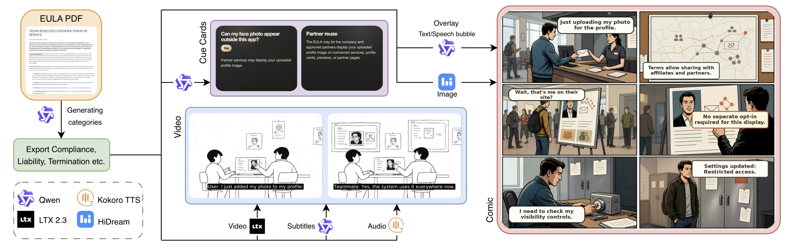

EULALens
Visualizing complexity and extracting actionable insights from legal documents.

Abstract
Digital agreements govern the use of online products and services, yet their length and legal complexity hinder effective communication of consequential terms. Ofcom reports that only 8% of online platform users read platform terms in full, while Pew Research found that 56% of U.S. adults frequently accept privacy policies without reading them. We present EULALens, an interactive platform that identifies key EULA clauses and transforms them into concise cue cards, scenario-based comics, and narrated videos. Beyond helping users explore complex agreements, EULALens provides agreement creators and service providers with accessible multimodal alternatives for communicating their terms. In a study with 30 participants, the generated formats received favorable ratings for understandability and source accuracy and were strongly preferred over the original text. These findings suggest that multimodal AI explanations can improve how consequential terms are communicated to end users.
Try it yourself
Pick a real EULA below to explore its risk categories, cards, comics, and video explainers.
group People
-
person